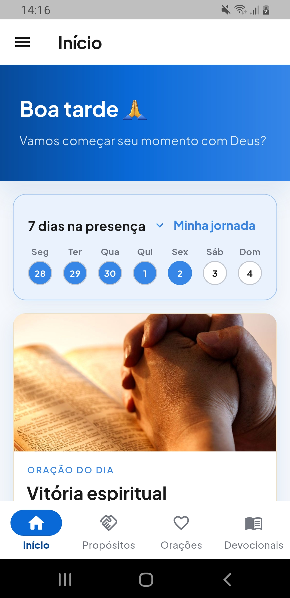
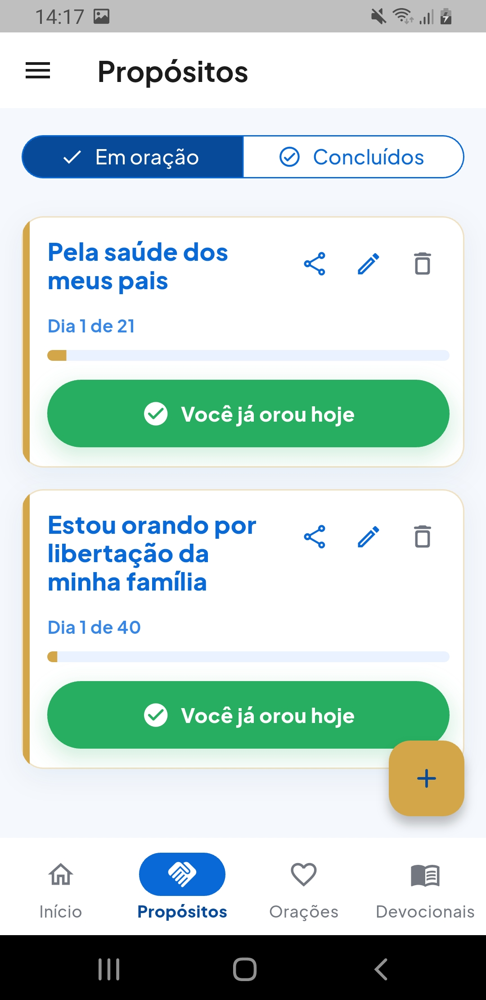
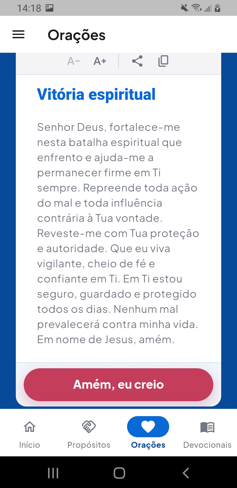
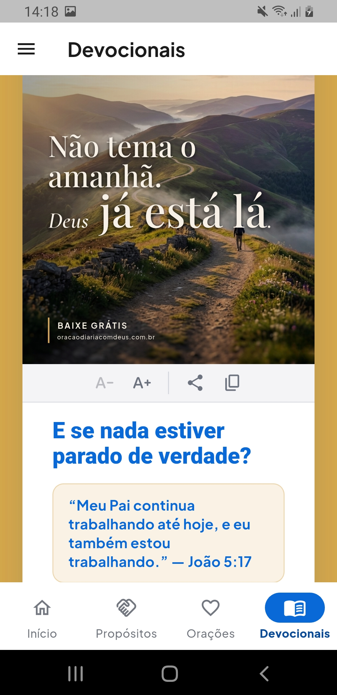
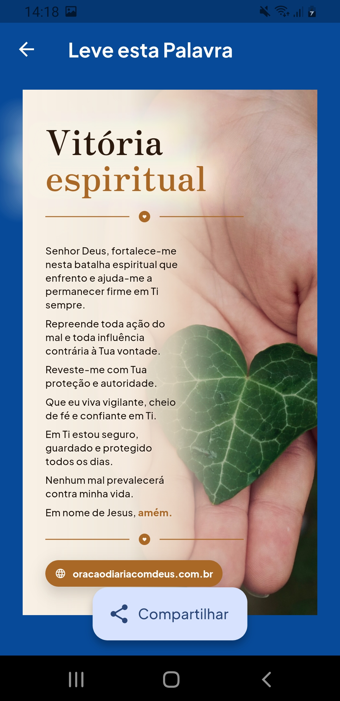
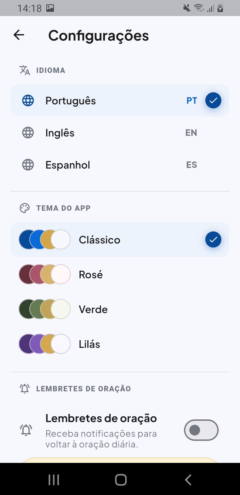

Comece uma conversa com Deus.
Orações diárias e por temas para diferentes momentos da vida. Encontre também o Pai Nosso e orientações sobre como orar.
Veja as oraçõesNo meio da rotina, abra espaço para a fé. Encontre orações, reflita na Palavra e leve seus pedidos a Deus — um dia de cada vez.
Baixar grátis no Google PlayPara Android · Português, inglês e espanhol
Conheça o seu próximo momento de fé
Palavras para orar
Reflexões para o dia
Constância na sua caminhada
Um lugar acolhedor no seu celular para conversar com Deus, encontrar inspiração e cuidar da sua vida espiritual.
Orações diárias e por temas para diferentes momentos da vida. Encontre também o Pai Nosso e orientações sobre como orar.
Veja as oraçõesDevocionais e versículos que convidam a desacelerar, refletir e trazer a Palavra para mais perto da sua rotina.
Conheça os devocionaisAcompanhe sua jornada e ative lembretes de oração. Pequenos momentos podem fazer parte de uma rotina com mais propósito.
Descubra os propósitos
Sua família. Uma decisão. Um recomeço. Crie um propósito e encontre um jeito simples de continuar orando pelo que está no seu coração.
Registre o pedido que você quer levar a Deus.
7, 14, 21, 30 ou 40 dias de oração.
Veja o progresso dos propósitos em oração e concluídos.
Seus propósitos ficam salvos localmente no aparelho.
Leitura, reflexão, oração e uma mensagem para quem você ama. Explore as telas reais do aplicativo.

Dedique alguns minutos à sua conversa com Deus.

Reflexões para levar com você ao longo do dia.
Organize pedidos e acompanhe sua caminhada.

Compartilhe uma mensagem de fé com quem você ama.
Escolha as cores que mais acolhem o seu momento. Ajuste a leitura e os lembretes para que a oração encontre espaço no seu dia.

Abra o app. Escolha uma oração. Comece a sua caminhada, um dia de cada vez.
Baixar grátis no Google PlayDisponível para Android
Sim. Você pode instalar o Oração Diária com Deus gratuitamente pela Google Play e começar sua rotina de oração no celular.
Orações diárias e por temas, devocionais, versículos, orientações sobre como orar, Pai Nosso, propósitos de oração, temas de cores, lembretes e compartilhamento.
Você cria um pedido, escolhe uma duração de 7, 14, 21, 30 ou 40 dias e marca os dias de oração. Os propósitos podem estar em oração ou concluídos.
Sim. Os propósitos ficam salvos localmente no seu aparelho para você acompanhar sua caminhada dentro do app.
Sim. Você pode ativar os lembretes nas configurações do app e permitir as notificações no Android para lembrar do seu momento de oração.
Sim. Você pode escolher entre os temas Clássico, Rosé, Verde e Lilás nas configurações do app.
O aplicativo oferece suporte a português, inglês e espanhol.
Sim. Compartilhe conteúdos e artes com amigos e familiares para levar uma mensagem de fé a quem você ama.
Sim. Abra o app, escolha um conteúdo e dedique alguns minutos ao seu momento com Deus. Você pode acompanhar sua jornada e organizar seus propósitos ao longo dos dias.